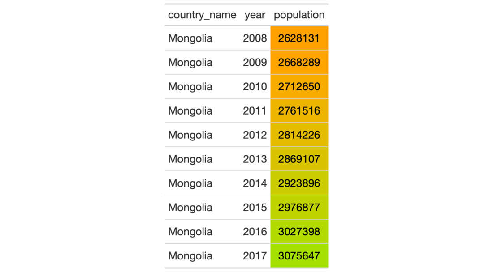
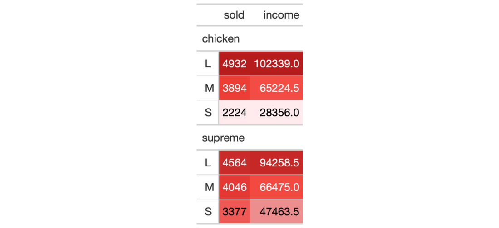

It's possible to add color to data cells according to their values. The
data_color() function colors all rows of any columns supplied. There are
two ways to define how cells are colored: (1) through the use of a supplied
color palette, and (2) through use of a color mapping function available from
the scales package. The first method colorizes cell data according to
whether values are character or numeric. The second method provides more
control over how cells are colored since we provide an explicit color
function and thus other requirements such as bin counts, cut points, or a
numeric domain. Finally, we can choose whether to apply the cell-specific
colors to either the cell background or the cell text.
data_color( data, columns, colors, alpha = NULL, apply_to = "fill", autocolor_text = TRUE )
| data | A table object that is created using the |
|---|---|
| columns | The columns wherein changes to cell data colors should occur. |
| colors | Either a color mapping function from the scales package or
a vector of colors to use for each distinct value or level in each of the
provided |
| alpha | An optional, fixed alpha transparency value that will be applied
to all of the |
| apply_to | Which style element should the colors be applied to? Options
include the cell background (the default, given as |
| autocolor_text | An option to let gt modify the coloring of text
within cells undergoing background coloring. This will in some cases yield
more optimal text-to-background color contrast. By default, this is set to
|
An object of class gt_tbl.
The col_*() color mapping functions from the scales package can be used in
the colors argument. These functions map data values (numeric or
factor/character) to colors according to the provided palette.
scales::col_numeric(): provides a simple linear mapping from
continuous numeric data to an interpolated palette.
scales::col_bin(): provides a mapping of continuous numeric data to
value-based bins. This internally uses the base::cut() function.
scales::col_quantile(): provides a mapping of continuous
numeric data to quantiles. This internally uses the
stats::quantile() function.
scales::col_factor(): provides a mapping of factors to colors. If the
palette is discrete and has a different number of colors than the number of
factors, interpolation is used.
By default, gt will choose the ideal text color (for maximal contrast)
when colorizing the background of data cells. This option can be disabled by
setting autocolor_text to FALSE.
Choosing the right color palette can often be difficult because it's both
hard to discover suitable palettes and then obtain the vector of colors. To
make this process easier we can elect to use the paletteer package,
which makes a wide range of palettes from various R packages readily
available. The info_paletteer() information table allows us to easily
inspect all of the discrete color palettes available in paletteer. We
only then need to specify the package and palette when calling the
paletteer::paletteer_d() function, and, we get the palette as a vector of
hexadecimal colors.


3-13
Other Format Data:
fmt_currency(),
fmt_datetime(),
fmt_date(),
fmt_markdown(),
fmt_missing(),
fmt_number(),
fmt_passthrough(),
fmt_percent(),
fmt_scientific(),
fmt_time(),
fmt(),
text_transform()
# library(paletteer) # Use `countrypops` to create a gt table; # Apply a color scale to the `population` # column with `scales::col_numeric`, # four supplied colors, and a domain tab_1 <- countrypops %>% dplyr::filter(country_name == "Mongolia") %>% dplyr::select(-contains("code")) %>% tail(10) %>% gt() %>% data_color( columns = vars(population), colors = scales::col_numeric( palette = c( "red", "orange", "green", "blue"), domain = c(0.2E7, 0.4E7)) ) # Use `pizzaplace` to create a gt table; # Apply colors from the `red_material` # palette (in the `ggsci` pkg but # more easily gotten from the `paletteer` # package, info at `info_paletteer()`) to # to `sold` and `income` columns; setting # the `domain` of `scales::col_numeric()` # to `NULL` will use the bounds of the # available data as the domain tab_2 <- pizzaplace %>% dplyr::filter( type %in% c("chicken", "supreme")) %>% dplyr::group_by(type, size) %>% dplyr::summarize( sold = dplyr::n(), income = sum(price) ) %>% gt(rowname_col = "size") %>% data_color( columns = vars(sold, income), colors = scales::col_numeric( palette = paletteer::paletteer_d( palette = "ggsci::red_material" ) %>% as.character(), domain = NULL ) )